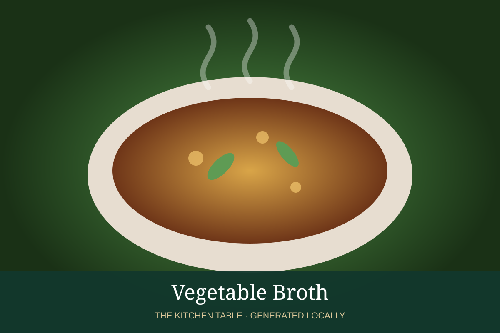

← Back to all recipes
BROTH & STOCK · VEGETABLE
Vegetable Broth
Versatile vegetable broth with clean sweetness and no meat.
Broth & StockVegetable

Ingredients
- 2 onions
- 3 carrots
- 3 celery ribs
- 1 leek
- 4 garlic cloves
- 1 tomato
- Parsley stems
- 2 bay leaves
- 3 qt water
Preparation
- Roughly chop vegetables.
- Sweat in a little oil for 10 minutes without browning.
- Add herbs and water; simmer 45–60 minutes.
- Strain and cool.